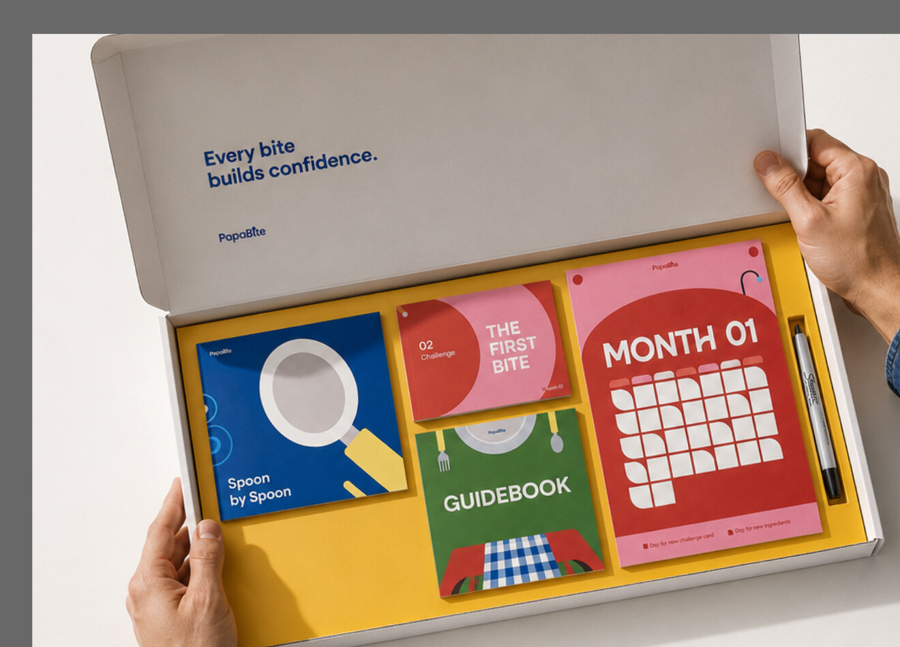

Create your profile
Share your availability, cooking confidence, family setup and your baby's current weaning stage.
Personalised weaning support for dads
PapaBite turns weaning into a clear, practical way for dads to take the lead — with weekly challenges shaped around real family life.

Early parenting information often speaks around dads rather than directly to them. Good intentions are left without a clear moment, task or route into care.
At around six months, feeding changes. Weaning creates a practical, repeatable space for dads to prepare, feed, notice and learn alongside their baby.
How it works
Tell us about your time, your baby and your family. We shape the challenge — you choose when to begin.
Share your availability, cooking confidence, family setup and your baby's current weaning stage.
We match weekly challenges to your time, goals, food culture and baby's needs.
Use each challenge card with its matching recording page. Notice progress, not perfection.
Your honest feedback helps the toolkit respond better to real family life.
Inside the toolkit
Each part has a job. Together they turn an intention to help into something a dad can actually do.
One weekly action, adjusted by time, confidence, baby stage and food culture.
Prompts change with each challenge — from reactions and textures to dad's confidence.
A clear before, during and after feeding guide for safe, confident first steps.
A visible rhythm for new cards, new ingredients and moments worth noticing.
Your plan
Some weeks begin with ten quiet minutes. Others invite you to plan, prepare and lead the whole feed. PapaBite meets you where you are — then helps you go further.
Real life, honestly
Finished one challenge or used PapaBite for months? Tell us what worked, what didn't, and what got in the way.
Ready when you are.